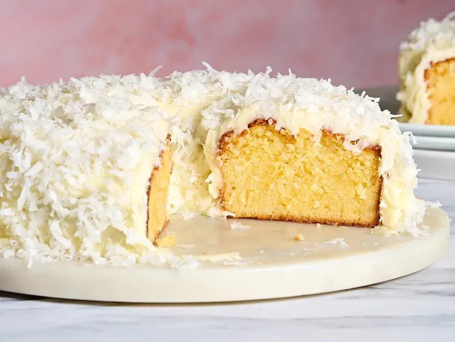
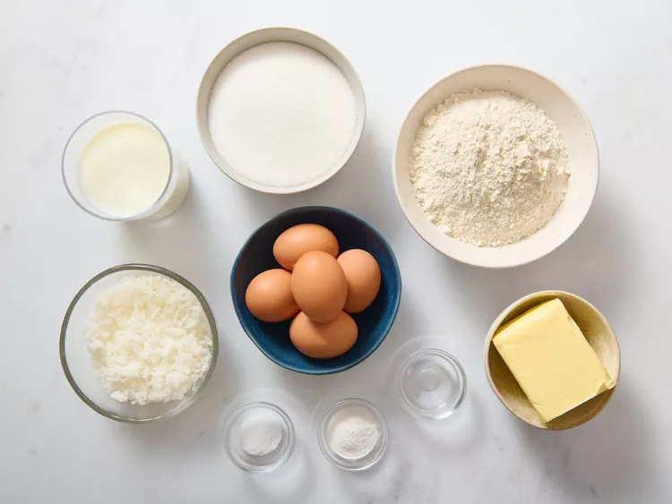
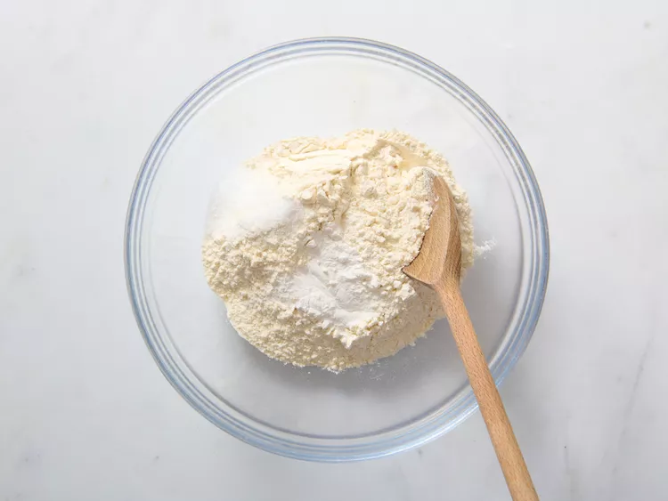
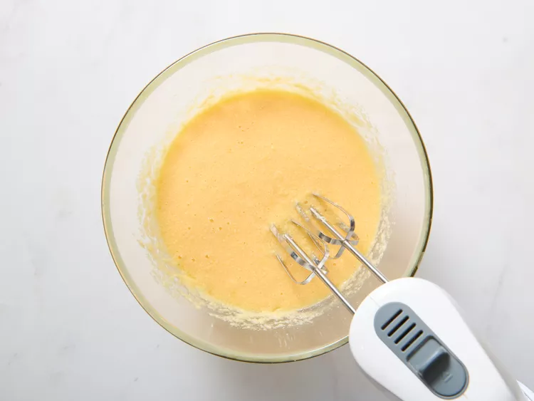
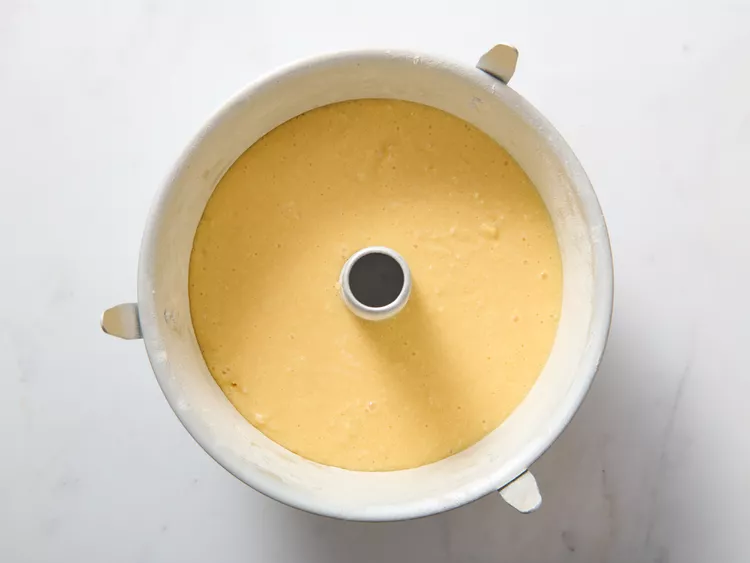
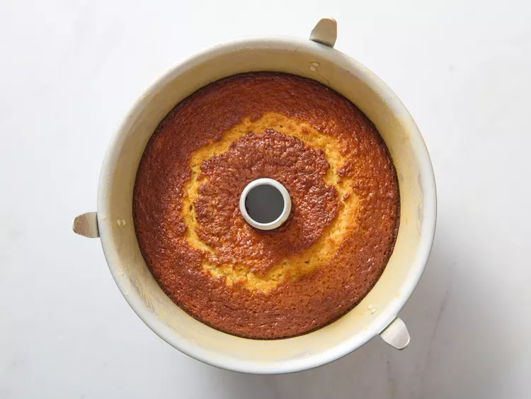
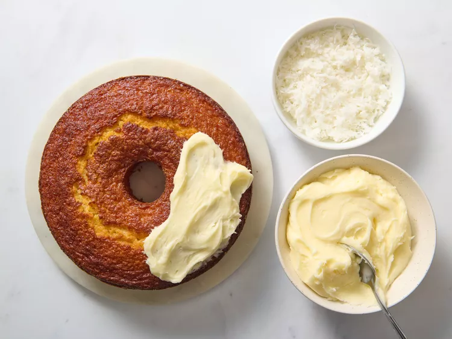

This coconut cake recipe is soooo good! It makes a really moist cake with lots of coconut flavor. I take it to work and it disappears fast. I bake it in a Bundt pan but you can bake it in two 9-inch cake pans and layer it with your favorite frosting and flaked coconut.
Prep Time: 30 mins
Cook Time: 1 hr
Total Time: 1 hrs 30 mins
Servings: 12
Yield: 1 (10-inch) Bundt cake
Preheat the oven to 350 degrees F (175 degrees C). Grease and flour a 10-inch tube pan (see Cook's Note).

Mix flour, baking powder, and salt together in a large bowl; set aside.

Beat butter and sugar together in a separate large bowl with an electric mixer until noticeably lighter in color and fluffy. Add eggs, one at a time, allowing each egg to blend into the beaten butter mixture before adding the next. Mix in coconut extract.

Pour in flour mixture alternately with buttermilk, mixing until just incorporated. Fold in coconut, mixing just enough to evenly combine. Pour cake batter into prepared pan.

Bake in the preheated oven until a toothpick inserted into the cake comes out clean, about 1 hour.

If desired, frost cooled cake with your favorite buttercream frosting and sprinkle with flaked coconut.

You can bake the cake batter in two greased 9-inch cake pans in the preheated oven until a toothpick inserted into the cake comes out clean, about 40 to 45 minutes. Cool cakes for 5 minutes in the pans before inverting onto cooling rack to cool completely before frosting.